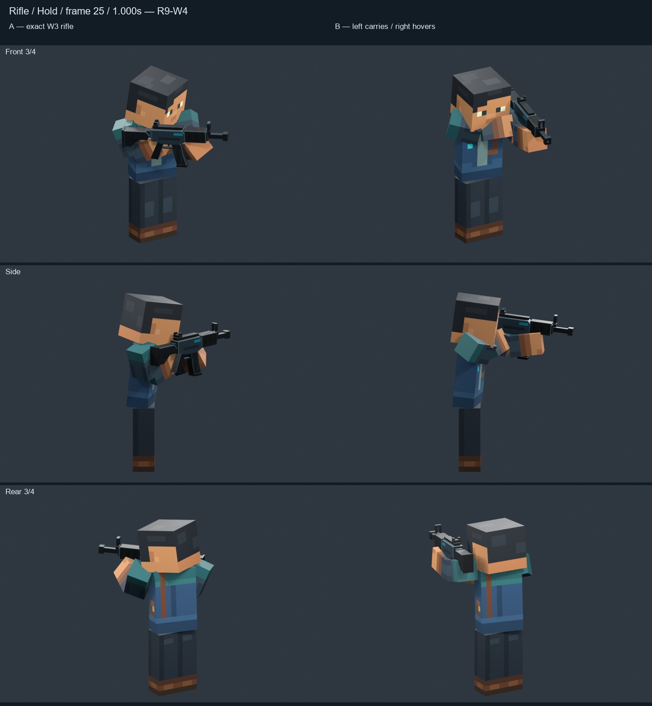
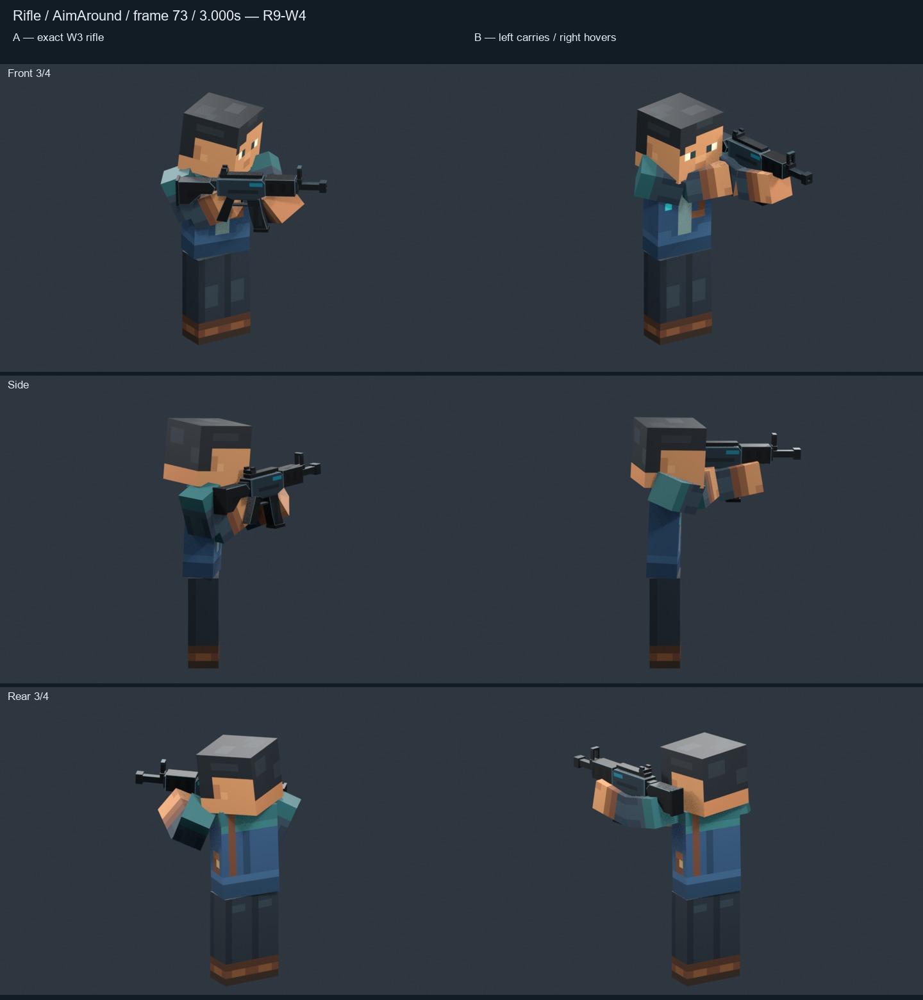
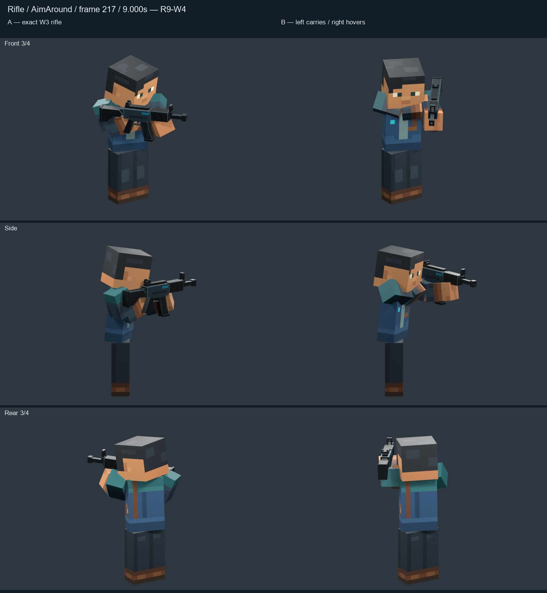
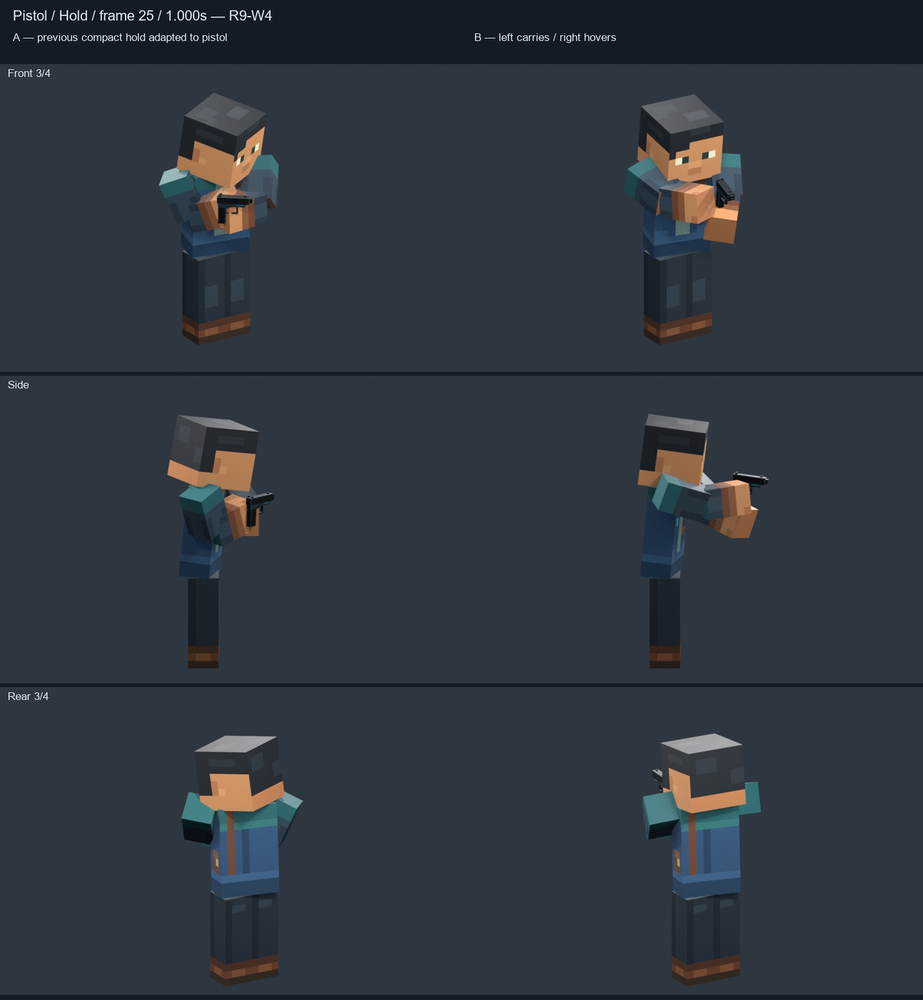
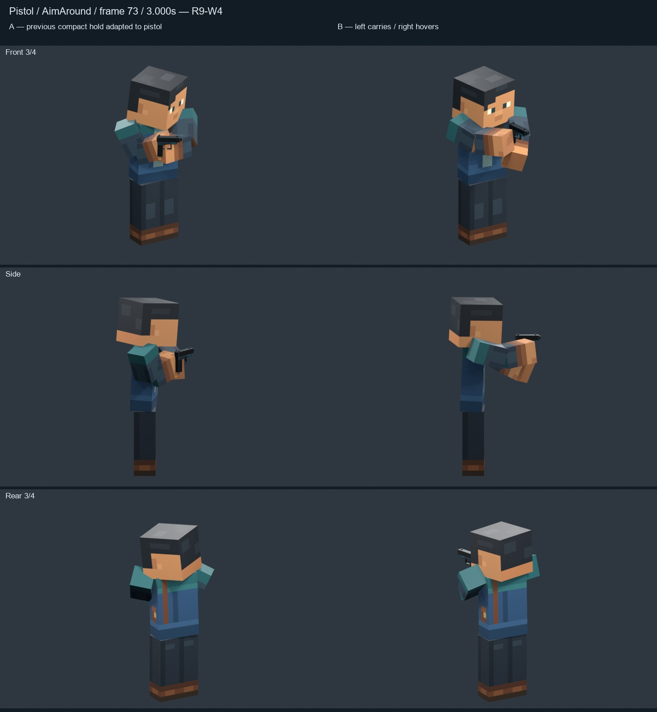
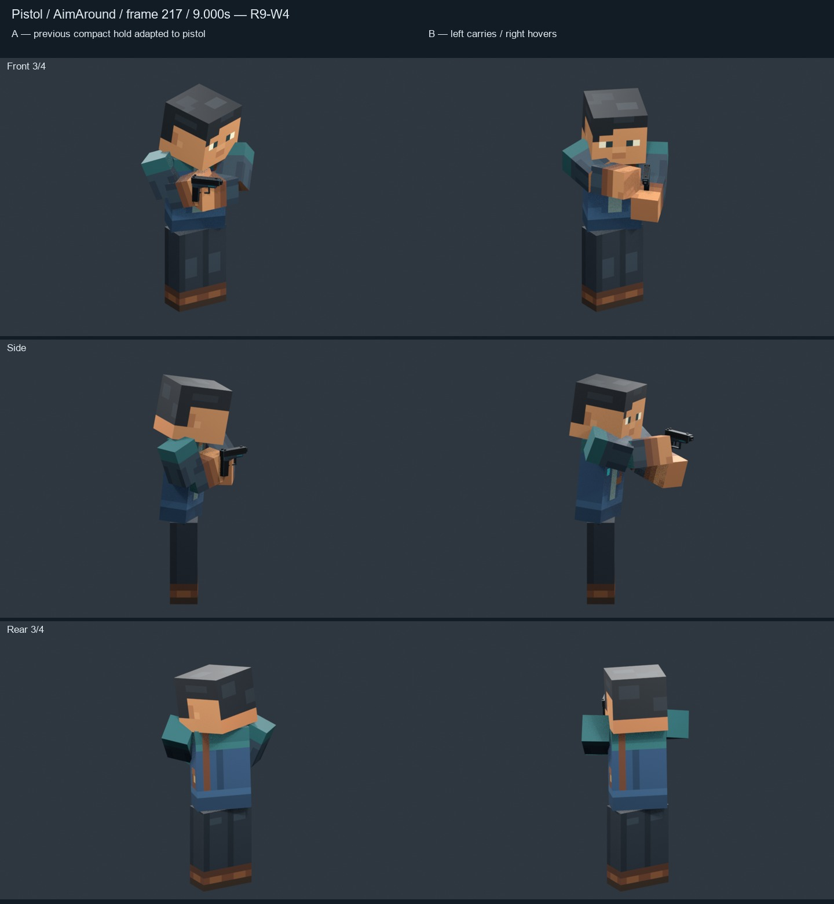
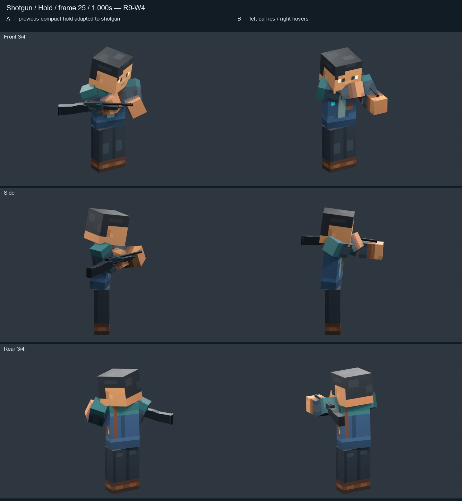
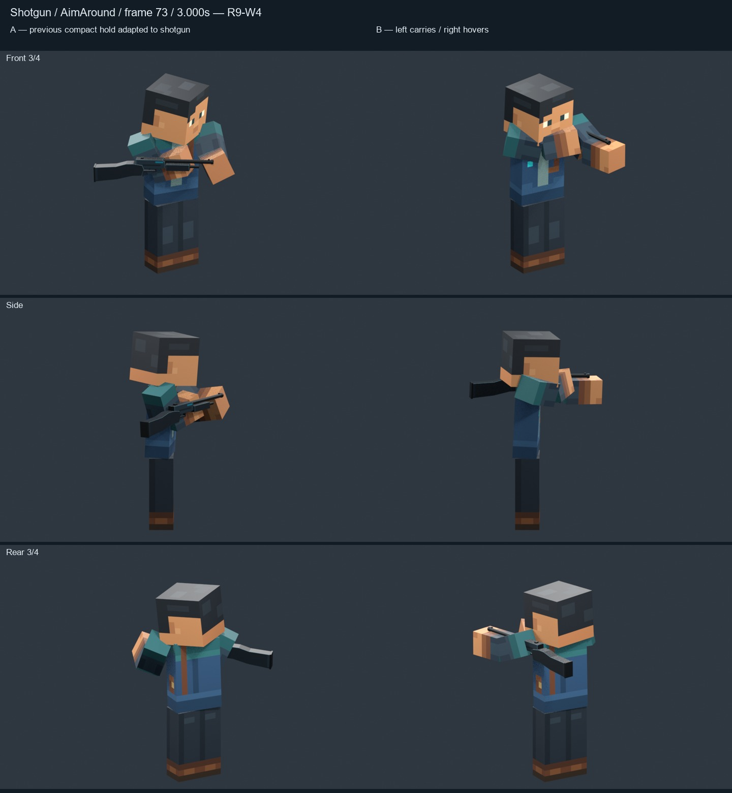
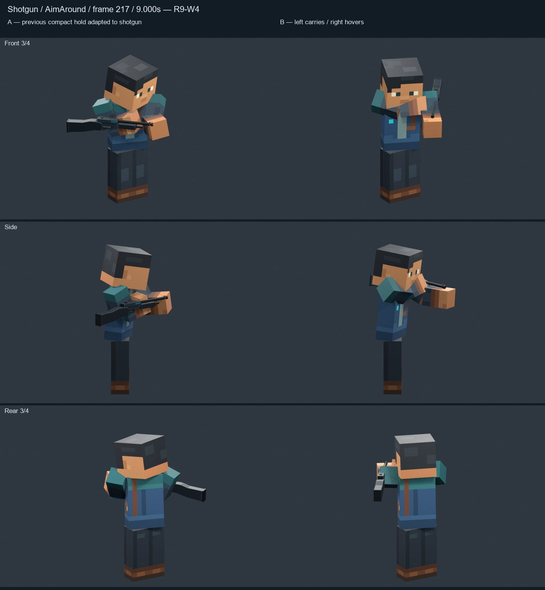

ARTISTIC STATUS: AWAITING HUMAN REVIEW
Left arm carries; right block hand hovers near the receiver. Both arms extend forward. Blender study only. The supplied crossbow board is the artistic direction.
Compare silhouette, visible gap and body coordination in the movies. Turning reels preserve the original path-case cuts and should not be looped. Occlusion can hide the gap in some views; geometry checks do not establish artistic approval.
A: exact W3 actions. B: new one-arm study.



A: previous compact hold adapted to this native asset; no prior category living study existed. B: new one-arm study.



A: previous compact hold adapted to this native asset; no prior category living study existed. B: new one-arm study.



Rows: rifle, pistol, shotgun. A left / B right. This 208-frame excerpt is not a loop; the Blender scene contains the full 832-frame joint loop.